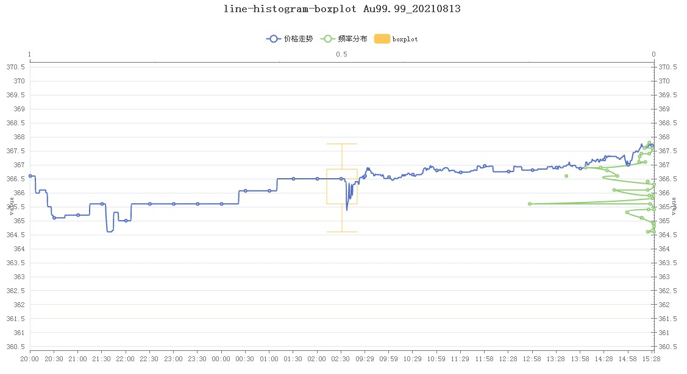
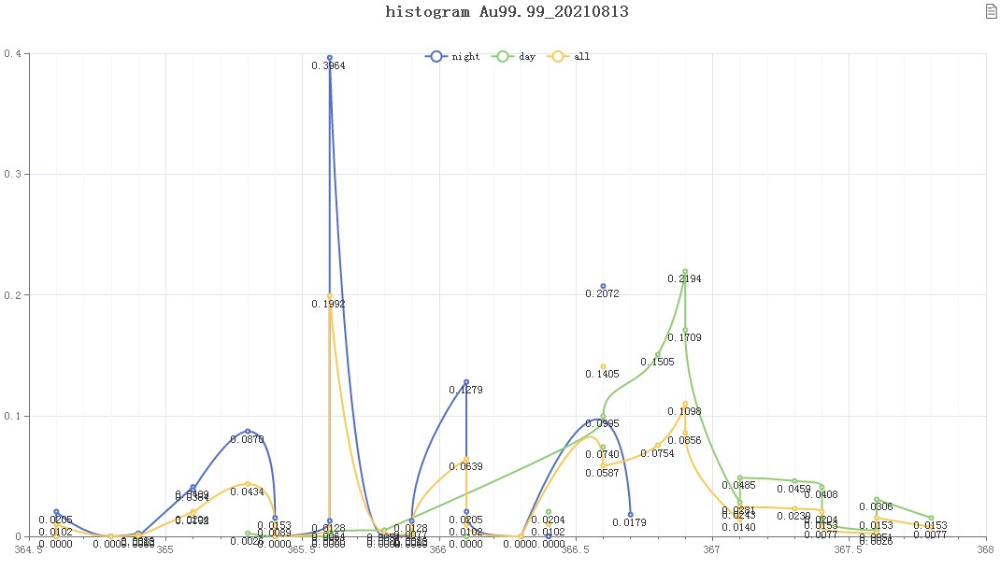

尽管从2018年就已经部署爬虫抓取数据，但分析的工作却始终没有跟上，一方面是因为自身的知识储备还不够，另一方面是账户上没有可供操作的盈余失去了动力。以前可以借口说算力不够，但现在我寄予厚望的生产力已经在那里积灰了整整14个月……大概唯一欣慰的是有些配件涨价了，配来的电脑竟没有贬值反而增值了10%+。新冠下的某些人们终究是沉浸在了虚拟的世界，疯狂且自大。
不可否认K线图真的很强大，但它也给我们一种错觉：即价格是时间的函数。但事实告诉我们，时间只是其中的一个变量，如果只用这一个变量去解决问题的话，结果可能非常玄学，即所谓随机漫步或者布朗运动。
在走势曲线图只有一组数据，相比蜡烛图、箱线图等而言含有的信息更少，正是在这样的背景下，我萌发了自己动手的念头。最开始我用Python写了个简易的脚本。策略很简单保守高抛低吸，即分析每周、月、季、年度数据，四分之一位以下买入，四分之三位以上卖出。
1
2
3
4
5
6
7
8
9
10
11
12
13
14
15
16
17
18
19
| #sba .py Statistics Basic Analysis 统计基本分析
#ande.stduio (c) 2018-11-20 20:30
import numpy as np
from collections import OrderedDict
def sba(arr):#Statistics Basic Analysis
dic = OrderedDict()
dic['min'] = np.min(arr)#最小值
dic['max'] = np.max(arr)#最大值
dic['mean'] = np.mean(arr)#平均数
dic['std'] = np.std(arr)#标准差
dic['5'] = np.percentile(arr, 5)#百分之五位
dic['25'] = np.percentile(arr, 25)#四分之一位
dic['50'] = np.percentile(arr, 50)#中位数
dic['75'] = np.percentile(arr, 75)#四分之三位
dic['95'] = np.percentile(arr, 95)#百分之九十五位
return dic
|
后来我偶尔也会想着要是有可视化作辅助那就更好了。但终归需求不强烈，直到疫情期间百无聊赖地捣鼓Echarts.js，我终于写出了一个还算满意的视图。首先的想法是用直方图实现分布，这要用到ecStat.js，略显遗憾的是原生只支持频数没有频率分布（最新的ecStat-1.2.0.js仍是没有）。为了实现大一统的理想，我在computeBins(data, optOrMethod){}函数段里增加了如下代码：
1
2
3
4
5
6
7
8
9
10
11
12
13
14
15
16
17
18
19
20
21
22
23
| /**
return {
bins: bins,
data: data,
customData: customData
};
* 计算区间分布频率
* 20210814
* Ande Studio
*/
var lens = values.length;//数据长度
var rateData = map(bins, function (bin) {//计算区间分布频率
//return [+((bin.x0 + bin.x1) / 2).toFixed(toFixedPrecision), (bin.sample.length/lens).toFixed(toFixedPrecision)];
return [+((bin.x0 + bin.x1) / 2).toFixed(toFixedPrecision), (bin.sample.length/lens).toFixed(4)];
});
return {
bins: bins,
data: data,
rateData:rateData,//区间分布频率
customData: customData
};
|
其实仅从图形上看，频数与频率是没有区别的，但我的想法是在一个视图中实现将走势曲线投影成分布图，即大一统。因频数的坐标轴将会是变动不可控，而频率的坐标轴却是固定的0~1，更能体现一致性。我的做法是用x1，y1轴画正常的走势曲线。然后用y2轴做分布区间，x2轴锚定频率。为了辨析统计四分位数，我直接将箱线图也叠了进去。以Au99.99_20210813数据演示，最终的效果如下：

箱线图可以帮我们高低定位，而分布图可以将我们的决策落在胜率更大的区间。在分布图中，有几个峰，如果将数据分成晚间和日间两个区段，峰形会更像钟形的正态分布。价格分布符合正态分布，是的就是那个意思，利用统计学，胜率倾斜于大概率事件。
